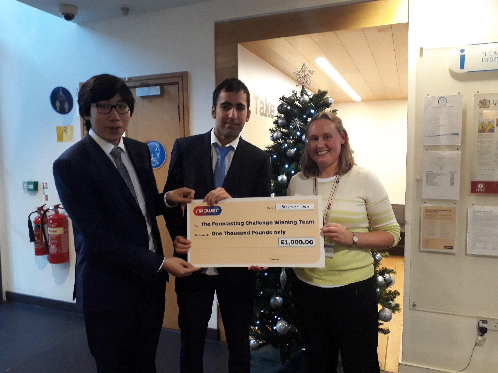

Winning a national forecasting competition
I decided to take part in the npower national gas load forecasting competition because no one at Warwick had been able to win it. There were three stages to the competition where we had to forecast intraday gas load consumption over six month periods. I initially thought of using a random forest solution but eventually dived into the literature on consumer behaviour. Owing to my background in Physics, I developed the winning 72 variable multiple multivariate linear regression model.
Sadly, npower soon faced financial troubles after their merger with SSE fell through and my achievement was never announced on their website.
The slideshow from our presentation is available below. It was designed to be informal and explain complex topics in very simple terms.